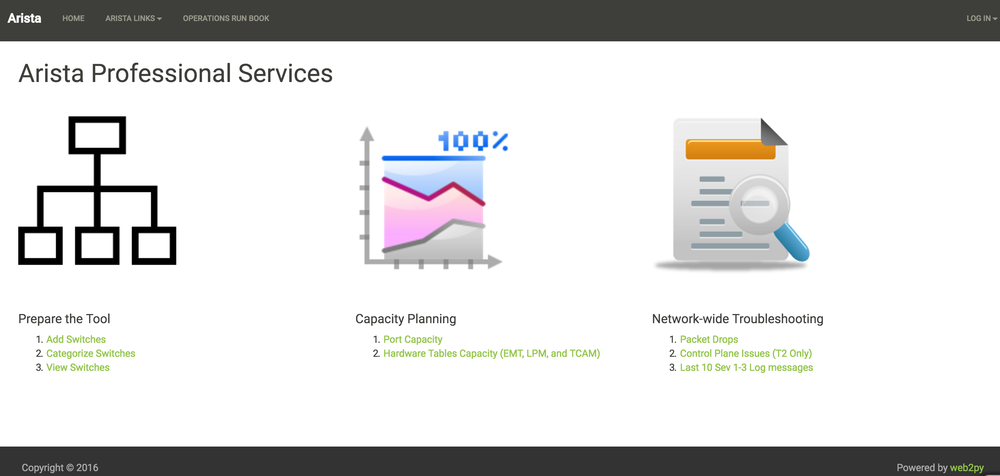

Preface¶
This book is for network engineers managing Arista network products and have no prior knowledge on any programming language. Python is an easy to learn programming language and more importantly it is a very powerful programming language. Python can be used to build programs ranging from automating simple tasks to building most sophisticated and advanced software applications .
So How does anyone can learn Python?. Typical way of learning programming language is understanding the core concepts with general examples. Then develop programs for the use cases specific to you using the core concepts. So the learning cycle is high because you first learn Python with the examples that you don’t need and then translate that learning to create programs for your use case. This is where many of the network engineers lose their learning track.
This book addresses this problem by teaching core Python using the example the network engineers need. The goal of this book is to help network engineers to automate the common operational and troubleshooting steps. Also understanding the programmability of network devices changes your approach to solve a problem in a creative way.
Chapters 1 to 4 discusses Python core concepts, Json RPC and Pyeapi modules with the common networking use cases such as inventory, troubleshooting and capacity planning. You will be introduced with a framework which you can reuse it for your own network use cases.
Chapters 5 to 7 introduces a Python web framework called Web2Py. Chapter 8 to 11 enables you to host your Python programs in the Web2Py application. If you follow Chapters 1 to 11 in this book, you will build and host this web based tool which can be leveraged by all the network engineers in your organization.
